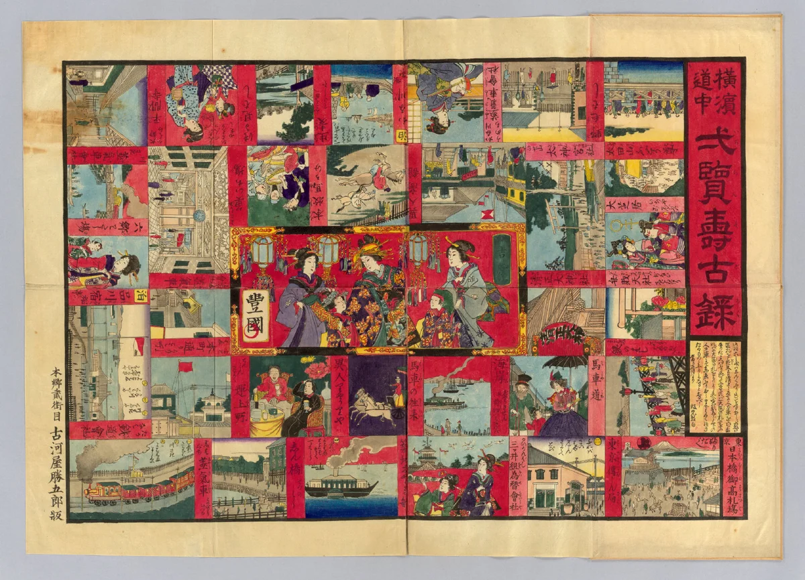
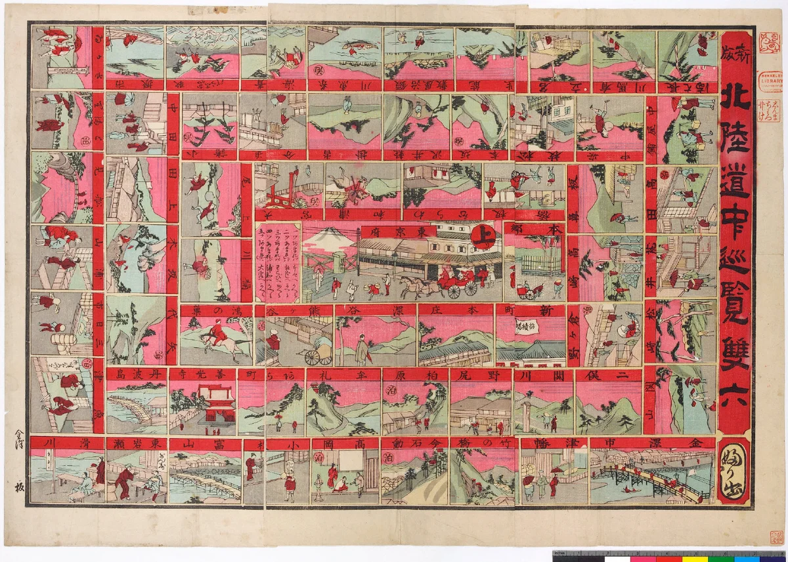
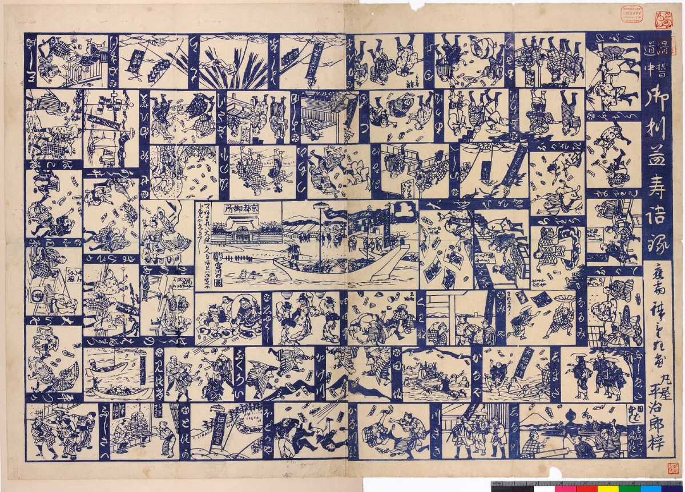
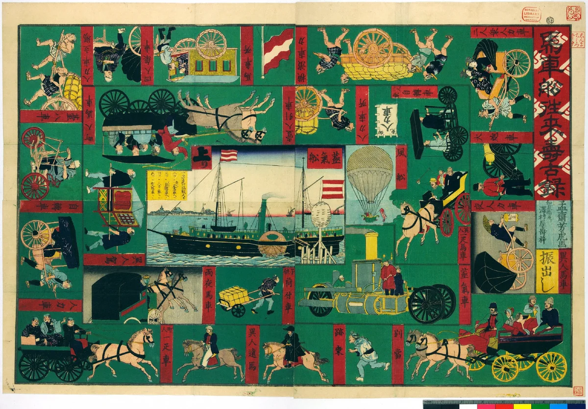

选择旅人
支持 1–4 人本地轮流游玩。每名旅人可输入名字并拥有不同颜色的棋子。
从横滨开港的城市奇观，到北陆道中的山河驿站；从伊势参宫与“ええじゃないか”的集体狂欢，再到马车、蒸汽船、铁路与气球构成的交通新世界。
1–4 人同屏游玩 · 无需登录 · 进度保存在当前浏览器




四章、三十六格。先抵达“上り”的旅人获胜。
规则刻意保持简单，让路线、图像与历史事件成为游戏的主体。
支持 1–4 人本地轮流游玩。每名旅人可输入名字并拥有不同颜色的棋子。
每回合掷一次六面骰，棋子按点数沿三十六格路线前进。
部分格子会前进、后退、暂停、追加投掷，或让所有旅人共同移动。
不要求精确点数；抵达或越过第 36 格即获胜。单人模式可以挑战最少回合数。
立即向终点移动指定格数。
沿原路退回指定格数。
下一次轮到你时跳过一回合。
执行事件后仍由当前旅人继续。
棋盘上的所有旅人一起前进。
根据新的随机结果获得不同效果。
改编说明：本页采用绘双六“振出—掷骰—格子事件—上り”的基本结构，但事件与路线为面向中文读者重新设计的教育型改编，并非对某一历史棋盘规则的逐字复原。
游戏中的四章分别取材于原页面展示的四件绘双六。
第一章
横滨开港后迅速成为接触海外贸易、城市新景观与新式交通的窗口。原作把港口、商馆、马车道、人物与宴游场景压缩在一张可行走的城市图谱中。
游戏改编：城市见闻带来“前进”和“再掷”，海风与陌生道路则会拖慢旅程。
第二章
以金泽为出发地，沿北陆诸地向东京日本桥推进。它不是按比例测绘的地图，而是一张把山川、驿站、名物与目的地按旅行顺序组织起来的“叙事地理”。
游戏改编：豪雪、险路和温泉构成节奏变化，旅人最终在日本桥进入下一章。
第三章
蓝色线描中，护符、舞蹈、宴饮、乔装和临时失序连成一场伊势参宫的滑稽旅程。原页面将其与 1867 年前后的“御札降临”和“ええじゃないか”现象联系起来。
游戏改编：这一章最具偶然性——所有人可能一起前进，也可能因狂欢过度暂停或退回。
第四章
马车、人力车、轮船、铁路与气球不再只是故事背景，而成为棋盘的主角。它像一张把“技术进步”逐格展开的交通图鉴。
游戏改编：新交通大幅加速行程，但气球也可能偏航。最后在交通博览会抵达“新世界”。
绘双六同时承担棋盘、地图、故事、教材、图画百科、大众传媒与社会价值观模型的功能。它让玩家通过路线、偶然性和逐格探索来理解城市、旅行、宗教庆典与现代技术。
本页把四幅原作重组为一次连续旅程：不是把历史图像平铺陈列，而是让读者在“掷骰—移动—遇事—抵达”的过程中亲自经历它们。
它把知识变成路线，把偶然变成节奏，把历史图像变成一次可以亲自走过的旅程。
原作图像沿用 Heading East 页面所展示的数字化馆藏版本。本页为中文互动教育改编。